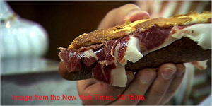
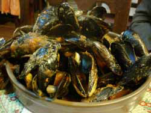
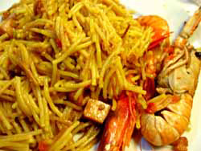

Greetings from Barcelona
The following is an email sent from Poppy to my little brother, Calvin. I’m pulling my hair out, wishing I were there!

Cal,

The food has been fabulous. They have one of those farmer’s markets here, like the one in Montreal and in other cities, only this one is by far the biggest and most spectacular I’ve ever seen. Everyone eats tapas at lunch or in the early evening, which are kind of like appetizers—stuff like little pieces of bread with cheese or meat, olives, dried tomatoes, peppers, or other things. We had a terrific breakfast yesterday of what they call tortillas but that are more like omelettes with potatoes and vegetables. For lunch, we found this place that Mark Bittman of the New York Times wrote about and said had the best sandwich he ever ate. It’s this kind of thinly sliced, very rare expensive ham, from specially fed pigs that eat wild acorns, on an unbelievably delicious, crispy roll. I don’t know if it was the best sandwich I ever ate, but it was extraordinarily good.

Dinner last night was a little disappointing—we went to the area near the Mediterranean sea and ate at a mediocre restaurant in an area that seems to cater to tourists. We had a vermicelli-based paella (I forget what it’s called at the moment), which is a common dish in the Catalan region of Spain. It was okay, but not great—it had ham, crayfish (little lobsters, hard to eat), and calamari (squid)—for the main course, and mussels in marinara sauce and some nasty capellini in a nondescript white sauce for appetizers.
The coffee, which is available everywhere, is bracing and delicious—I discovered a coffee drink called cortado yesterday, which is espresso with a bit of milk. When you add sugar, tastes like a the most delicious strong, delicious hot chocolate. We’ve also had some spectacular gelati ice cream and will probably get some great chocolate today or sometime before we leave.
The architecture here is breathtaking, and there’s lots of nightlife—the streets in our neighborhood where we’re staying were teeming with people last night at midnight. It’s also great to run in the area around our apartment, which I’m going to do right now. We’re here for one more day, then we will rent a car and begin our tour of the countryside. Mom booked us in three paradors over the coming week—old castles that have been restored to accommodate tourists. It should be great, and we will take lots of pictures.
Love, Dad
Comments
What a wonderful, vivid description of Barcelona and the food they’ve been eating. Sounds like a great trip.
Add a comment